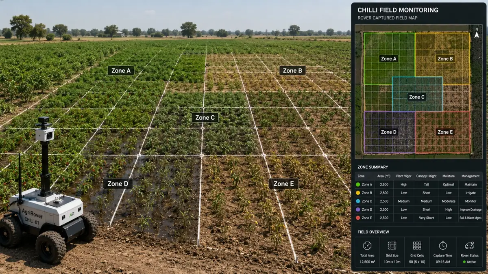
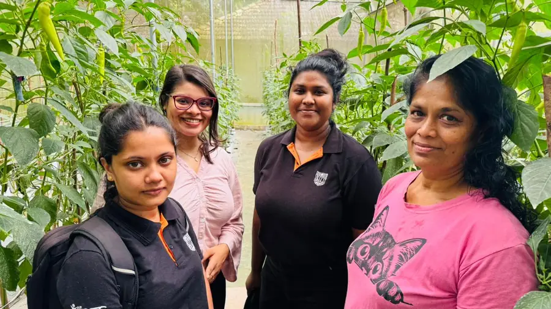
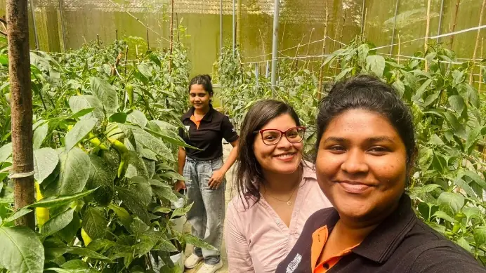
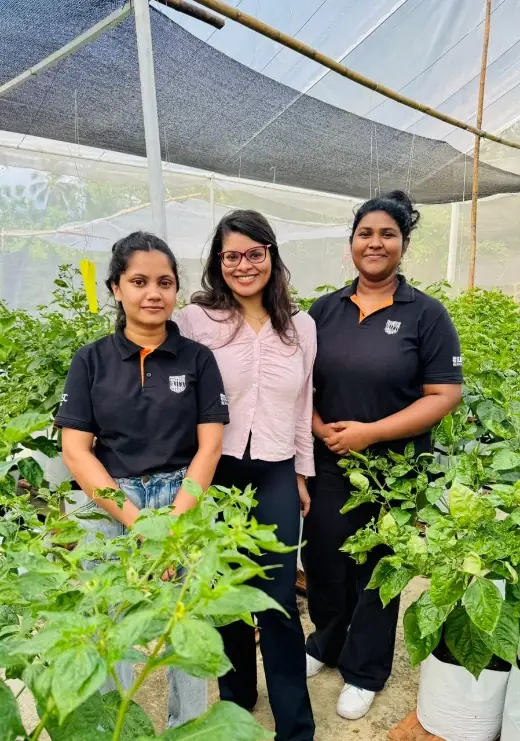
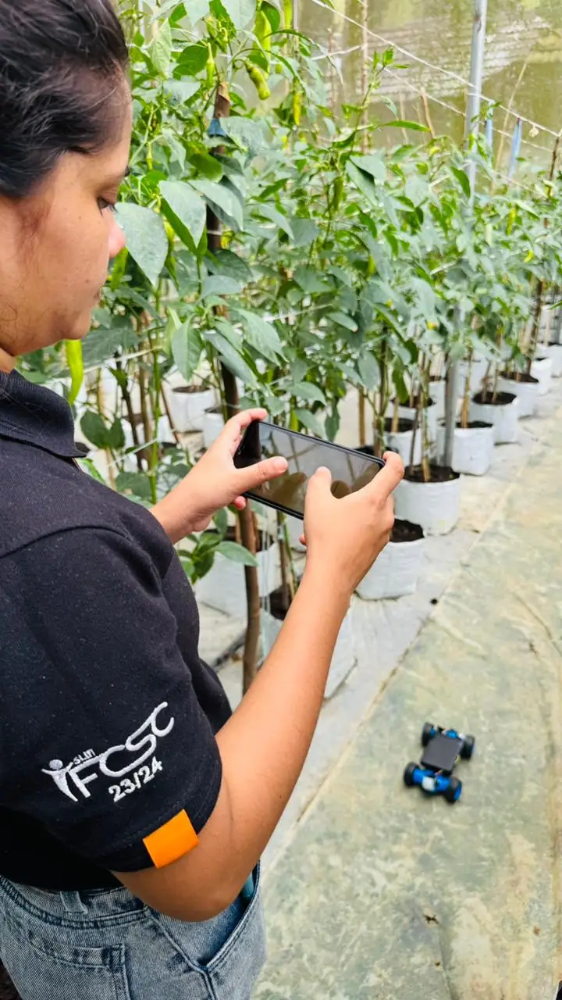
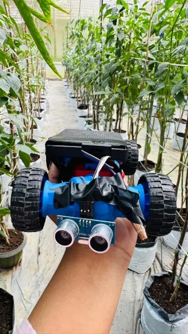
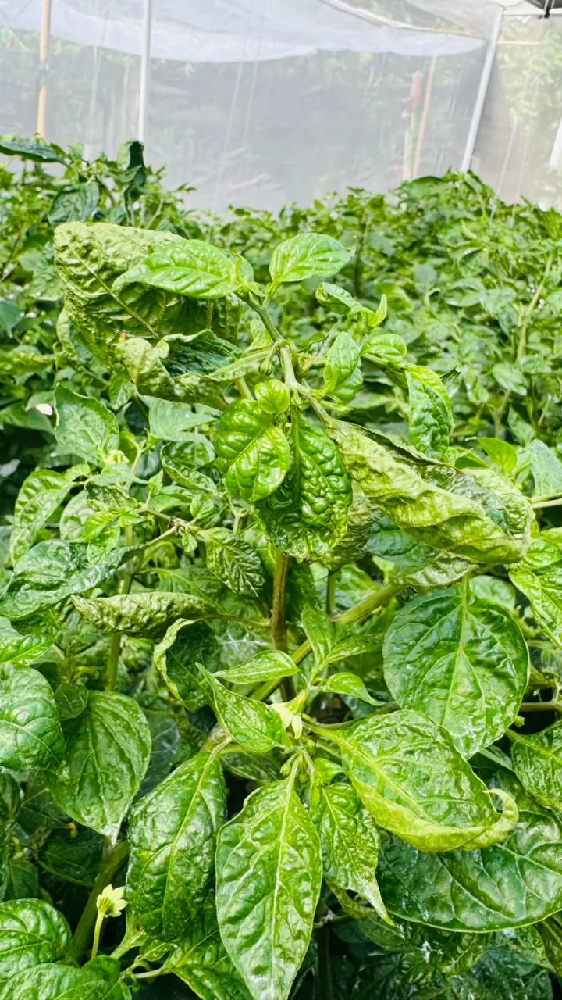
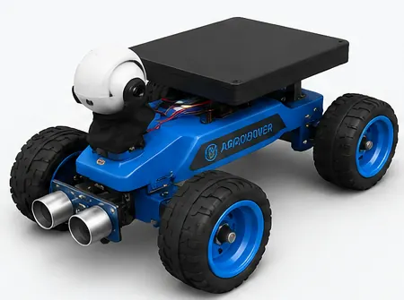
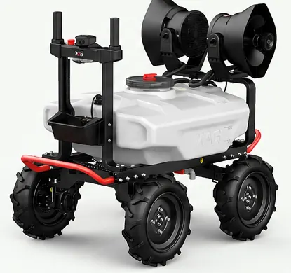

R26-IT-075 Research project, SLIIT Faculty of Computing
Smart chilli cropintelligence from anautonomous rover
A ground rover that moves between chilli rows, reads the soil, photographs every plant and turns the field into clear management zones, so farmers know where to irrigate, treat and fertilise.
soil moisture sensor records cleaned into 35 features
Sentinel-2 records used for field zone mapping
test accuracy of the LSTM + XGBoost soil health model
silhouette score for the final field zone segmentation
One rover, four kinds of field intelligence
Chilli cultivation in Sri Lanka is hit hard by disease, water stress, soil imbalance and uneven field conditions, and most farmers still rely on manual observation and fixed irrigation schedules.
This project builds a Smart Chilli Crop Intelligence System around an autonomous ground rover. The rover collects field data through cameras, GNSS/IMU and soil sensors. Machine learning models then analyse crop health, soil status, irrigation needs and field zones, and a farmer-friendly dashboard turns the results into practical recommendations for farmers and agronomists.
Existing tools usually solve disease detection, irrigation, soil analysis or mapping on their own. Our work brings them together in one system that shares data between components.

Each member owns one part of the system
Select a component to read its methodology and results on the Domain page.

Intelligent Navigation and Sensor-Based Irrigation Control
Scores GNSS reliability under the crop canopy and drives threshold-based drip irrigation, with Isolation Forest and Random Forest models flagging abnormal soil moisture.

AI-Based Chilli Crop Disease, Stress and Growth Monitoring
Classifies eight chilli disease classes from rover images with EfficientNet-B0, explains predictions with Grad-CAM and runs on device through TFLite.

Field Zone Mapping and Autonomous Seeding and Treatment Planning
Clusters Sentinel-2 spectral indices with K-Means to split the field into management zones and produce zone-wise seeding, irrigation, fertiliser and treatment plans.

Soil Health Prediction Using a Hybrid LSTM and XGBoost Model
Classifies soil as healthy, moderate or poor from N, P, K, pH, temperature, humidity and rainfall readings to guide fertiliser decisions.
Complete system flow
Four pipelines start from the rover and dashboard connection and meet at one place: recommendations for farmers.

Select the diagram to view it full size.
Two HARTI-guided field visits
Guided by the Hector Kobbekaduwa Agrarian Research and Training Institute, the team studied real chilli plantations before refining the rover and data workflow.






Malagala, Padukka Visit 1
- Studied crop-row spacing, plant height, irrigation practice and common disease and stress symptoms.
- Found practical challenges: uneven ground, narrow rows, sunlight variation, soil moisture differences and the limits of manual disease checks.
- Used the findings to refine rover movement, camera angles, soil sensor placement and the data collection workflow.
Hanwella to Avissawella Visit 2
- Compared conditions across two plantations to validate the need for zone-based monitoring.
- Observed differences in soil condition, plant growth, irrigation coverage and crop health between sections.
- Confirmed the value of combining disease detection, soil health, irrigation and zone mapping in one rover.
From prototype 1 to prototype 2
Field testing showed where the first rover struggled. The second prototype is designed for both grounded soil and bagged chilli plants.

Compact test rover used in both field visits
| Camera capture | Capture limited by plant height | Antenna-type camera adjusts to each variety |
|---|---|---|
| Soil and irrigation | Hard to measure soil in planted bags | Stick-type soil sensor for ground and bags |
| Camera height | Fixed, not adjustable | Height set to suit the crop |
| Soil sensing | Mainly grounded soil | Grounded soil and planted bags |
| Irrigation | Less effective on bagged plants | Supports grounded and bagged plants |
| Versatility | Fewer planting setups | Adapts to crop heights and environments |

Planned build for the final system
Smart rover. Smarter chilli farming.
chiliz turns this research into a product: an autonomous field rover paired with a web dashboard that helps farmers and agribusinesses make data-driven decisions about irrigation, soil, disease and planting.
The dashboard offers live field monitoring, soil data and crop health analytics, irrigation control and scheduling, alerts, data history and multi-user access.
Basic plan
- Web dashboard access for one user
- Live monitoring
- Basic analytics
- Irrigation alerts
- Seven days of data history
- Email support
Premium plan
- Multi-user dashboard access
- Everything in Basic
- AI crop health analytics
- Advanced analytics and reports
- Irrigation control and scheduling
- Unlimited data history
- Priority support and training
chiliz rover unit
- Fully assembled chiliz rover
- Adjustable-height antenna camera
- Soil sensor stick
- Onboard controller and connectivity
- Irrigation monitoring module
- One-year warranty
Shipping and installation charges may apply. Subscriptions cover the dashboard and services; the rover is sold separately.
Business model
- Hardware sales, one-time
- Subscription plans, monthly
- After-sales support and maintenance
- Future add-ons and upgrades
Target customers
- Small-scale farmers
- Plantations and large farms
- Agricultural companies
- Research institutions
- Government programmes
Go-to-market
- Direct sales and demos in farming communities
- Partnerships with agri cooperatives and dealers
- Online marketing and social media
- Training and onboarding for farmers
- After-sales service
Our vision is to make chilli farming more productive, sustainable and profitable through smart robotics and data-driven insight.
Seven of thirteen milestones complete
The draft final report and this website were submitted on 11 October 2026. The final presentation and viva are next, from 19 to 21 October.
54% of assessment milestones complete
View all milestones- DomainLiterature, research gap, problem, objectives, methodology, technologies
- DocumentsProject charter, proposal, research paper and group report
- PresentationsProposal, progress 1, progress 2 and final slides
- About usResearch group and supervisors